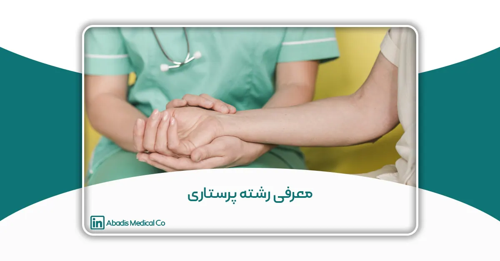
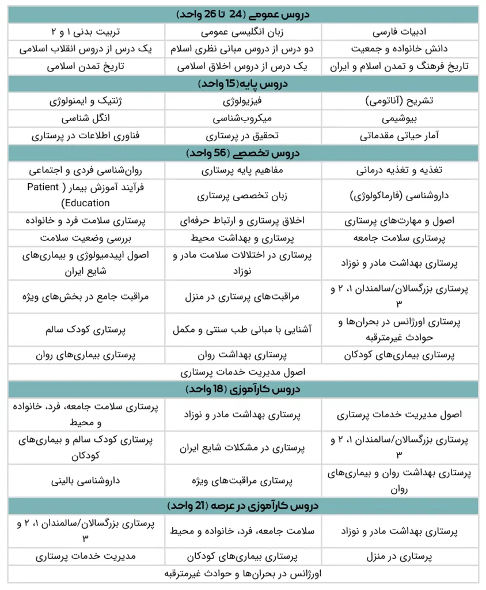

چکیده
رشته پرستاری یکی از مهمترین و پرطرفدارترین شاخههای علوم پزشکی است که نقش اساسی در ارتقاء سلامت فردی و اجتماعی دارد. در این مقاله، به معرفی جامع رشته پرستاری، ساختار تحصیلی این رشته در ایران، فرصتهای شغلی در داخل و خارج از کشور، مسیرهای اپلای و مهاجرت، و ویژگیهای شخصیتی مورد نیاز برای موفقیت در این حرفه میپردازیم.
همچنین با توجه به نقش کلیدی پرستاران در کنترل عفونت، اهمیت استفاده از تجهیزات پزشکی استاندارد و ایمن مانند کیسه ساکشن یکبار مصرف مورد بررسی قرار گرفته است.
هدف این مقاله، افزایش آگاهی عمومی، ارتقاء جایگاه علمی و شغلی پرستاران، است.
کلمات کلیدی: پرستاری، رشته پرستاری، بازار کار پرستاری، اپلای پرستاری، آموزش پرستاری
مقدمه
پرستاری یکی از ستونهای اصلی نظام سلامت در هر جامعه است. این حرفه، علاوه بر اینکه یک مسیر شغلی پایدار و انسانی به شمار میرود، نقش بسیار مهمی در پیشگیری، مراقبت و کنترل عفونتها در بیمارستانها و مراکز درمانی ایفا میکند.
با افزایش جمعیت، سالمند شدن جوامع و بروز بحرانهای بهداشتی در سراسر جهان، نیاز به پرستاران متخصص و توانمند بیش از هر زمان دیگری احساس میشود.
در سالهای اخیر، رشته پرستاری به یکی از محبوبترین گزینههای تحصیلی در میان داوطلبان علوم پزشکی تبدیل شده است. ترکیبی از امنیت شغلی، فرصتهای مهاجرتی، و امکان خدمت به جامعه، این رشته را به چشماندازی جذاب برای علاقهمندان به حوزه سلامت تبدیل کرده است. در این مقاله با نگاهی جامع و کاربردی، به بررسی همهجانبه رشته پرستاری میپردازیم.
رشته پرستاری چیست؟
تعریف و اهمیت رشته پرستاری
رشته پرستاری یکی از مهمترین و حساسترین شاخههای علوم پزشکی است که تمرکز آن بر ارائه مراقبتهای درمانی، حمایتی و آموزشی به بیماران در تمامی مراحل زندگی قرار دارد.
پرستاران، علاوه بر مشارکت در درمان و پیگیری وضعیت بیماران، در ارتقاء سلامت جامعه، پیشگیری از بیماریها و کنترل عفونتهای بیمارستانی نیز نقش مؤثری دارند. این حرفه بهواسطه ارتباط مستقیم با بیماران، نیازمند دانش علمی بالا، مهارتهای عملی دقیق و توانایی برقراری ارتباط انسانی مؤثر است.
شرح وظایف یک پرستار
وظایف پرستاران بسته به محل خدمت (اورژانس، اتاق عمل، ICU، بخشهای تخصصی و…) و همچنین سطح تخصص (پرستار عمومی، پرستار مراقبت ویژه، سوپروایزر و…) متفاوت است. در ادامه به مهمترین مسئولیتهای یک پرستار اشاره میشود:
1. ارزیابی وضعیت بیمار
2. مراقبتهای درمانی و بالینی
3. آمادهسازی بیماران برای اقدامات درمانی
4. مراقبت از بیماران پس از عمل یا در شرایط بحرانی
5. مستندسازی و گزارشنویسی
6. آموزش و حمایت از بیماران و خانوادهها
7. کنترل عفونت و بهداشت محیط
8. مدیریت، برنامهریزی و سرپرستی
9. شرکت در پژوهش و توسعه علمی
ویژگیهای شخصیتی و مهارتی مورد نیاز برای پرستاران
پرستاری تنها یک مهارت فنی یا علمی نیست؛ بلکه ترکیبی از دانش پزشکی، مهارتهای ارتباطی، هوش هیجانی و تعهد انسانی است. افرادی که وارد این حرفه میشوند، باید علاوه بر مهارتهای تخصصی، از نظر روحی و شخصیتی نیز برای این مسیر آماده باشند.
در ادامه، به مهمترین ویژگیهای شخصیتی و مهارتی مورد نیاز برای یک پرستار موفق اشاره میکنیم:
1. تعهد و مسئولیتپذیری
2. توانایی مدیریت استرس و شرایط بحرانی
3. هوش هیجانی بالا
4. دقت و توجه به جزئیات
5. قدرت جسمی و استقامت بدنی
6. مهارت ارتباطی قوی
7. روحیه کار تیمی
8. آمادگی برای یادگیری مستمر
تنوع حوزههای کاری پرستاری
یکی از مهمترین مزایای رشته پرستاری، تنوع گسترده در حوزههای کاری آن است. پرستاران تنها محدود به بخشهای بستری بیمارستانی نیستند؛ بلکه در نقاط کلیدی سیستم سلامت، از اورژانس و اتاق عمل گرفته تا درمانگاهها، مراکز سلامت و سازمانهای امدادرسان حضور دارند.
این تنوع باعث شده است که رشته پرستاری برای بسیاری از علاقهمندان به حوزه سلامت، مسیر شغلی پویاتر و با انتخابهای بیشتری ارائه دهد.
حوزههای کاری رشته پرستاری
رشته پرستاری به دلیل گستردگی خدمات سلامت، در حوزههای کاری متنوعی حضور فعال دارد. پرستاران نهتنها در بخشهای بستری بیمارستانی، بلکه در اورژانس، مراقبتهای ویژه، مراکز بهداشت، منازل و حتی حوزههای آموزشی و پژوهشی فعالیت میکنند.
در ادامه، مهمترین حوزههای کاری پرستاری را مرور میکنیم:
1. پرستاری در بخشهای بستری عمومی
مراقبت مستقیم از بیماران بستریشده در بخشهای مختلف بیمارستان مانند:
- داخلی
- جراحی
- زنان
- کودکان
- ارتوپدی و…
2. پرستاری در اتاق عمل
- آمادهسازی بیمار برای عمل جراحی
- آمادهسازی تجهیزات و محیط جراحی
- کمک به جراح در طول عمل
- مراقبت و پایش بیمار در دوره پس از عمل
3. پرستاری اورژانس
رسیدگی سریع و دقیق به بیماران در شرایط بحرانی، با نیاز به:
- تصمیمگیری سریع
- آگاهی کامل از پروتکلهای اورژانسی
- توان جسمی و روحی بالا در مواجهه با شرایط پرتنش
4. پرستاری مراقبتهای ویژه
فعالیت در بخشهای تخصصی شامل:
- ICU (مراقبت ویژه بزرگسالان)
- CCU (مراقبت بیماران قلبی)
- NICU (مراقبت نوزادان نارس و بیمار)
شامل انجام مانیتورینگهای پیشرفته، مراقبت از بیماران ناپایدار و کار با تجهیزات تخصصی
5. پرستاری کنترل عفونت
یکی از تخصصیترین حوزههای پرستاری که نقش کلیدی در:
- پیشگیری از انتقال عفونتهای بیمارستانی
- اجرای پروتکلهای بهداشتی
- پایش بهداشت محیط و تجهیزات
- آموزش کادر درمان و بیماران در زمینه پیشگیری از عفونت
6. پرستاری سلامت جامعه
حضور در مراکز بهداشت و فعالیت در زمینه:
- آموزش همگانی
- پایش سلامت گروههای در معرض خطر
- اجرای برنامههای پیشگیری از بیماریها و ارتقاء سلامت
7. پرستاری در منزل
ارائه خدمات مراقبتی و حمایتی در فضای خانه برای:
- بیماران ناتوان
- سالمندان
- بیماران پس از عمل جراحی یا بستری
8. مدیریت پرستاری
- برنامهریزی و نظارت بر فعالیتهای پرستاری
- مدیریت منابع انسانی و تقسیم وظایف
- ارزیابی عملکرد پرستاران در بیمارستانها و مراکز درمانی
9. آموزش و پژوهش
فعالیت در دانشگاهها و مؤسسات آموزشی در قالب:
- تدریس دروس پرستاری و مراقبتی
- راهنمایی دانشجویان
- انجام پژوهشهای علمی در حوزه سلامت
10. حوزههای بینرشتهای
پرستاران میتوانند در همکاری با سایر تخصصها مانند روانشناسی، کاردرمانی، تغذیه، اپیدمیولوژی و همچنین در شرکتهای تولیدکننده تجهیزات پزشکی در بخشهایی مثل کنترل کیفیت، آموزش مشتری و مشاوره درمانی فعالیت داشته باشند.
مقاطع تحصیلی رشته پرستاری در ایران
رشته پرستاری در ایران در سه مقطع دانشگاهی ارائه میشود:- کارشناسی (B.Sc)
- کارشناسی ارشد (M.Sc)
- دکتری تخصصی (Ph.D)
دستهبندی دروس در مقطع کارشناسی رشته پرستاری
رشته پرستاری در مقطع کارشناسی پیوسته و تحت نظارت وزارت بهداشت، درمان و آموزش پزشکی ارائه میشود. دانشجویان در این مقطع باید حدود ۱۳۰ تا 136 واحد درسی شامل دروس عمومی، پایه، تخصصی و کارآموزی را بگذرانند.
- دروس عمومی بهمنظور تقویت مبانی فرهنگی، اجتماعی و اخلاقی دانشجویان ارائه میشوند.
- دروس پایه مبانی علوم زیستی و آماری را پوشش میدهند و دانشجو را برای ورود به دروس تخصصی آماده میکنند.
- دروس تخصصی اصلیترین بخش آموزشی رشته است و مهارتهای علمی و عملی مورد نیاز برای ارائه خدمات پرستاری را آموزش میدهد.
- کارآموزی بخشی حیاتی از آموزش پرستاری است که در بیمارستانها، مراکز درمانی و بهداشتی انجام میشود. دانشجویان از ترم سوم به بعد وارد بیمارستانها و مراکز درمانی میشوند و تحت نظر اساتید، مهارتهای بالینی را تمرین میکنند.
- در بخش کارآموزی در عرصه، دانشجویان در سطح وسیعتری از فعالیتهای درمانی و بهداشتی قرار میگیرند و نقش مؤثرتری ایفا میکنند.

دانشگاههای دارای رشته پرستاری در ایران
آذربایجان شرقی
- دانشگاه علوم پزشکی تبریز
- دانشگاه علوم پزشکی مراغه
- دانشگاه آزاد اسلامی واحد تبریز
- دانشگاه آزاد اسلامی واحد مرند
- دانشگاه آزاد اسلامی واحد مراغه
- دانشگاه آزاد اسلامی واحد سراب
آذربایجان غربی
- دانشگاه علوم پزشکی ارومیه
- دانشگاه علوم پزشکی خوی
- دانشگاه آزاد اسلامی واحد ارومیه
- دانشگاه آزاد اسلامی واحد خوی
- دانشگاه آزاد اسلامی واحد مهاباد
اردبیل
- دانشگاه علوم پزشکی اردبیل
- دانشگاه آزاد اسلامی واحد اردبیل
- دانشگاه آزاد اسلامی واحد خلخال
اصفهان
- دانشگاه علوم پزشکی اصفهان
- دانشگاه علوم پزشکی کاشان
- دانشگاه آزاد اسلامی واحد اصفهان (خوراسگان)
- دانشگاه آزاد اسلامی واحد دهاقان
البرز
- دانشگاه آزاد اسلامی واحد کرج
ایلام
- دانشگاه علوم پزشکی ایلام
بوشهر
- دانشگاه علوم پزشکی بوشهر
تهران
- دانشگاه علوم پزشکی تهران
- دانشگاه علوم پزشکی شهید بهشتی
- دانشگاه علوم پزشکی ایران
- دانشگاه علوم پزشکی ارتش جمهوری اسلامی ایران
- دانشگاه آزاد اسلامی واحد تهران پزشکی
- دانشگاه آزاد اسلامی واحد ورامین
چهارمحال و بختیاری
- دانشگاه علوم پزشکی شهرکرد
- دانشگاه آزاد اسلامی واحد شهرکرد
خراسان رضوی
- دانشگاه علوم پزشکی مشهد
- دانشگاه علوم پزشکی نیشابور
- دانشگاه علوم پزشکی تربت حیدریه
- دانشگاه آزاد اسلامی واحد مشهد
- دانشگاه آزاد اسلامی واحد نیشابور
- دانشگاه آزاد اسلامی واحد سبزوار
- دانشگاه آزاد اسلامی واحد قوچان
خراسان جنوبی
- دانشگاه علوم پزشکی بیرجند
خراسان شمالی
- دانشگاه علوم پزشکی خراسان شمالی
خوزستان
- دانشگاه علوم پزشکی جندیشاپور اهواز
- دانشگاه علوم پزشکی آبادان
- دانشگاه علوم پزشکی شوشتر
- دانشگاه علوم پزشکی بهبهان
- دانشگاه علوم پزشکی دزفول
- دانشگاه علوم پزشکی درفول
- دانشگاه آزاد اسلامی واحد اهواز
زنجان
- دانشگاه علوم پزشکی زنجان
- دانشگاه آزاد اسلامی واحد زنجان
سمنان
- دانشگاه علوم پزشکی سمنان
- دانشگاه آزاد اسلامی واحد سمنان
- دانشگاه آزاد اسلامی واحد شاهرود
سیستان و بلوچستان
- دانشگاه علوم پزشکی زاهدان
- دانشگاه علوم پزشکی ایرانشهر
- دانشگاه آزاد اسلامی واحد زاهدان
فارس
- دانشگاه علوم پزشکی شیراز
- دانشگاه علوم پزشکی جهرم
- دانشگاه علوم پزشکی فسا
- دانشگاه علوم پزشکی لارستان
- دانشگاه علوم پزشکی گراش
- دانشگاه آزاد اسلامی واحد جهرم
- دانشگاه آزاد اسلامی واحد استهبان
- دانشگاه آزاد اسلامی واحد اقلید
- دانشگاه آزاد اسلامی واحد داراب
- دانشگاه آزاد اسلامی واحد کازرون
- دانشگاه آزاد اسلامی واحد فیروزآباد
- دانشگاه آزاد اسلامی واحد ارسنجان
قزوین
- دانشگاه علوم پزشکی قزوین
- دانشگاه آزاد اسلامی واحد قزوین
- دانشگاه آزاد اسلامی واحد تاکستان
قم
- دانشگاه علوم پزشکی قم
- دانشگاه آزاد اسلامی واحد قم
کردستان
- دانشگاه علوم پزشکی کردستان
- دانشگاه آزاد اسلامی واحد سنندج
کرمان
- دانشگاه علوم پزشکی کرمان
- دانشگاه علوم پزشکی رفسنجان
- دانشگاه علوم پزشکی جیرفت
- دانشگاه علوم پزشکی بم
- دانشگاه آزاد اسلامی واحد کرمانشاه
کرمانشاه
- دانشگاه علوم پزشکی کرمانشاه
- دانشگاه آزاد اسلامی واحد کرمانشاه
کهگیلویه و بویراحمد
- دانشگاه علوم پزشکی یاسوج
- دانشگاه آزاد اسلامی واحد یاسوج
گلستان
- دانشگاه علوم پزشکی گلستان
- دانشگاه آزاد اسلامی واحد گرگان
- دانشگاه آزاد اسلامی واحد علیآباد کتول
- دانشگاه آزاد اسلامی واحد گچساران
گیلان
- دانشگاه علوم پزشکی گیلان
- دانشگاه آزاد اسلامی واحد رشت
- دانشگاه آزاد اسلامی واحد لاهیجان
- دانشگاه آزاد اسلامی واحد آستارا
لرستان
- دانشگاه علوم پزشکی لرستان
- دانشگاه آزاد اسلامی واحد خرمآباد
- دانشگاه آزاد اسلامی واحد بروجرد
- دانشگاه آزاد اسلامی واحد دورود
مازندران
- دانشگاه علوم پزشکی مازندران
- دانشگاه علوم پزشکی بابل
- دانشگاه آزاد اسلامی واحد ساری
- دانشگاه آزاد اسلامی واحد بابل
- دانشگاه آزاد اسلامی واحد تنکابن
- دانشگاه آزاد اسلامی واحد چالوس
- دانشگاه آزاد اسلامی واحد علیآباد کتول
- دانشگاه آزاد اسلامی واحد گرگان
- دانشگاه آزاد اسلامی واحد بندرگز
هرمزگان
- دانشگاه آزاد اسلامی واحد بندرعباس
یزد
- دانشگاه علوم پزشکی یزد
- دانشگاه آزاد اسلامی واحد یزد
جزیره کیش
- دانشگاه آزاد اسلامی واحد کیش
بازار کار رشته پرستاری در ایران و جهان
بازار کار پرستاری، چه در ایران و چه در سطح بینالمللی، همواره پرتقاضا و پویا است. نیاز مستمر به مراقبتهای بهداشتی، افزایش جمعیت سالمندان، و نقش کلیدی پرستاران در نظام سلامت باعث شده است که این رشته همواره فرصتهای شغلی متنوع و با ثباتی داشته باشد.
فرصتهای شغلی پرستاران در ایران
پرستاران در ایران میتوانند در محیطهای متعددی فعالیت کنند، از جمله:
- بیمارستانها و مراکز درمانی: بیشترین سهم اشتغال پرستاران مربوط به این مراکز است. با توسعه زیرساختهای درمانی، نیاز به نیروی پرستاری نیز روزبهروز افزایش مییابد.
- کلینیکها و پایگاههای بهداشتی: ارائه خدمات مراقبتی اولیه، آموزش بهداشت، واکسیناسیون و پیگیری وضعیت سلامت در این مراکز بر عهده پرستاران است.
- مراکز کنترل عفونت: به دلیل اهمیت پیشگیری از عفونتهای بیمارستانی، پرستاران آموزشدیده در این زمینه نقش مهمی دارند.
- خانههای سالمندان و مراکز مراقبت از بیماران مزمن: افزایش جمعیت سالمند، تقاضا برای پرستاران متخصص در مراقبتهای حمایتی را بیشتر کرده است.
- پرستاری در منزل: ارائه خدمات تخصصی به بیماران ناتوان یا ترخیصشده از بیمارستان در محیط خانه، که در حال گسترش است.
بازار جهانی پرستاری و آمار نیاز به نیروی پرستار
در بسیاری از کشورهای توسعهیافته، با توجه به نرخ رشد جمعیت سالمندان، مهاجرت پرستاران، و گسترش خدمات درمانی، با کمبود شدید پرستار مواجه هستند:
- کانادا: با اعمال سیاستهای مهاجرتی باز، پرستاران خارجی بهراحتی میتوانند وارد بازار کار شوند.
- آلمان: کمبود پرستار در بیمارستانها، خانههای سالمندان و مراکز توانبخشی باعث شده دولت شرایط جذب بینالمللی را سادهتر کند.
- استرالیا: برنامههای مهاجرتی ویژهای برای جذب پرستاران خارجی تدوین شده و شرایط کاری و رفاهی مناسبی در این کشور وجود دارد.
حقوق و درآمد پرستاران
میزان حقوق پرستاران بسته به کشور، میزان تجربه، محل خدمت و نوع تخصص متغیر است. مقایسهای از درآمد پرستاران در ایران و برخی کشورهای جهان:
| کشور | میانگین درآمد سالانه پرستار | توضیحات |
| ایران | حدود ۱۲۰ تا ۳۰۰ میلیون تومان | بسته به سابقه و شهر محل کار متغیر است |
| کانادا | حدود ۵۹،۵۰۰ تا ۸۳،۲۰۰ دلار کانادا | بسته به ایالت و نوع مرکز درمانی متفاوت است |
| آلمان | ۶۴،۰۰۰ تا ۷۰،۰۰۰ یورو | سابقه، شهر محل کار و نوع مرکز بر حقوق تأثیر دارد |
| استرالیا | ۷۶،۰۰۰ تا ۹۷،۵۰۰ دلار استرالیا | دارای بیمه و مزایای شغلی بسیار مناسب |
پرستاری یکی از معدود رشتههایی است که امنیت شغلی بالا، امکان مهاجرت، تنوع محیط کاری و درآمد مناسب را در کنار هم ارائه میدهد. افرادی که علاقهمند به کار در حوزه سلامت هستند و توانایی برقراری ارتباط مؤثر با بیماران را دارند، میتوانند با ورود به این حرفه آینده شغلی مطمئن و پویایی را تجربه کنند.
امکان اپلای و مهاجرت با رشته پرستاری
در سالهای اخیر، رشته پرستاری به یکی از پرتقاضاترین رشتهها برای مهاجرت تحصیلی و کاری در دنیا تبدیل شده است. نیاز روزافزون کشورهای توسعهیافته به نیروی پرستار، این رشته را به مسیری مطمئن برای پیشرفت شغلی و زندگی در خارج از کشور بدل کرده است.
کشورهای پرمخاطب برای مهاجرت پرستاران
بسیاری از پرستاران ایرانی، برای ادامه تحصیل یا کار، کشورهایی را انتخاب میکنند که علاوه بر درآمد مناسب و امنیت شغلی بالا، از سیستم سلامت پیشرفته نیز برخوردار باشند. برخی از مهمترین مقاصد مهاجرتی:
- کانادا
- آلمان
- استرالیا
- آمریکا
دلایلی مانند کمبود نیروی پرستار، امکانات رفاهی بالا، سیاستهای مهاجرتی باز و ارزشگذاری اجتماعی بالا برای پرستاران در این کشورها، موجب محبوبیت آنها شده است.
شرایط عمومی برای اپلای پرستاران
پرستاران علاقهمند به مهاجرت باید معمولاً این موارد را رعایت کنند:
- تسلط به زبان
- داشتن مدرک زبان (مانند IELTS برای کشورهای انگلیسیزبان یا TestDaF برای آلمان)
- معادلسازی مدارک تحصیلی
- مدارک پرستاری ایران باید توسط مراکز رسمی کشور مقصد بررسی و تأیید شود.
- آشنایی با فرهنگ سلامت و استانداردهای پرستاری
- شناخت قوانین، اصول و پروتکلهای حرفهای کشور مقصد اهمیت زیادی دارد.
- تجربه کاری
- داشتن حداقل ۱ تا ۲ سال سابقه کار به عنوان پرستار، امتیاز بزرگی محسوب میشود.
نقش آبادیس در ارتقاء سلامت و حمایت از کادر درمان
شرکت مخازن طبی آبادیس بهعنوان تولیدکننده تجهیزات پزشکی مانند کیسه ساکشن یکبار مصرف و ساکشن تیوب، همواره در مسیر ارتقاء سلامت عمومی و همراهی با پرستاران و کادر درمان قدم برمیدارد.
شناخت رشتههایی چون پرستاری و مسیرهای رشد آن، به ما کمک میکند تا ابزارهایی ایمن، بهصرفه و کارآمد متناسب با نیازهای واقعی پرستاران طراحی کنیم.
محصولات آبادیس، نقش مؤثری در کنترل عفونت، افزایش ایمنی محیط درمان و تسهیل عملکرد کادر درمان دارند.
نتیجهگیری
در شرایطی که بیمارستانها و مراکز درمانی در ایران و جهان، با کمبود نیروی پرستار روبهرو هستند، امنیت شغلی بالا، فرصتهای مهاجرتی، امکان ادامه تحصیل و ارتقاء تخصص، از مزایای این حرفه شریف به شمار میرود.
در دنیای امروز، که کنترل عفونت و رعایت پروتکلهای بهداشتی اهمیت ویژهای یافته است، حضور پرستاران حرفهای در کنار تجهیزات ایمن، نقش کلیدی در سلامت جامعه دارد. آبادیس، در این مسیر، همراه پرستاران است.